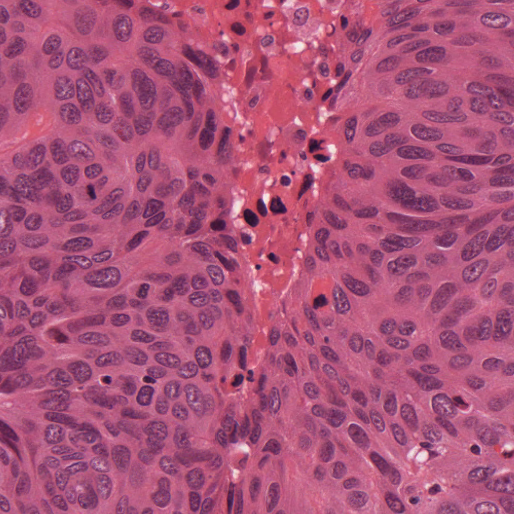
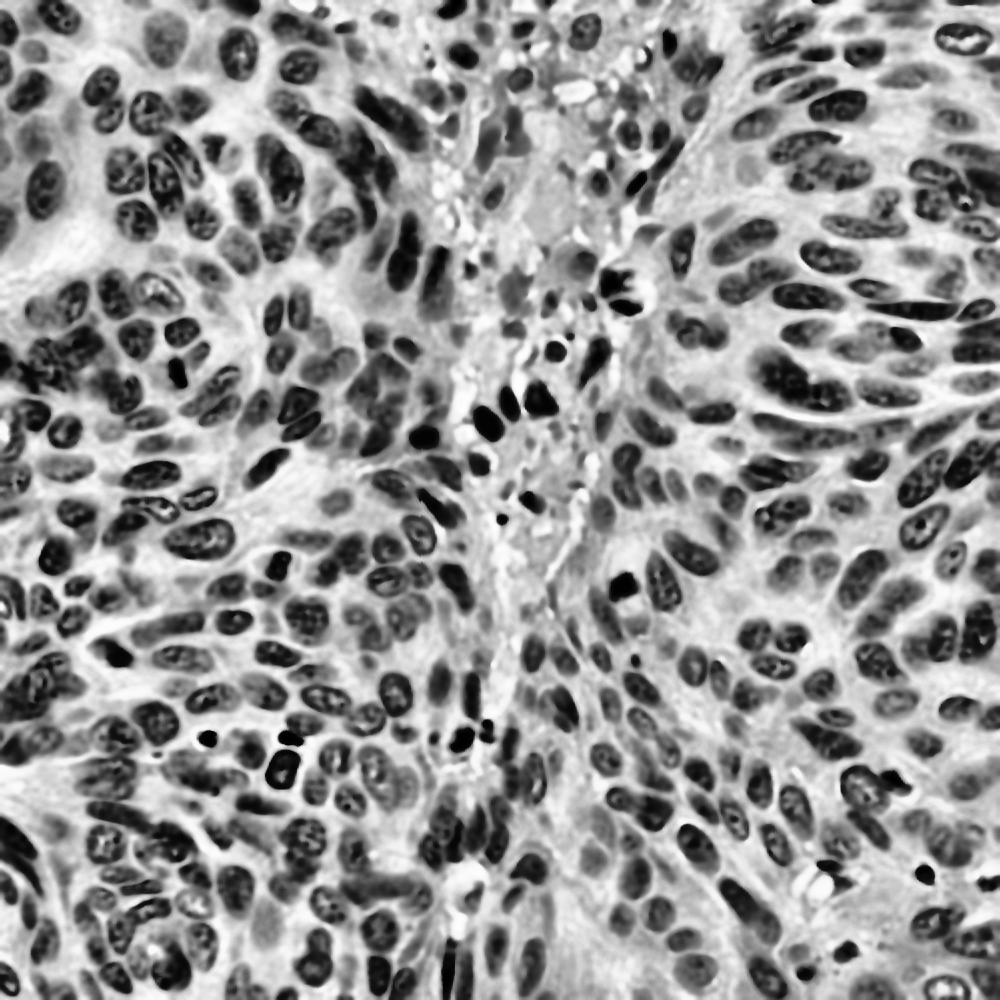

Golden Pipeline (H-Deconv + Bilateral + CLAHE)
Synergistic state-of-the-art: Eosin removal via H-Deconv + edge-preserving Bilateral denoising + CLAHE.
Original H&E Reference
Baseline Ground Truth

Active: Golden Pipeline
Dice: 0.841 | CNR: 1.64

🏆 Complete Quantitative Leaderboard (Sorted by Direct Segmentation Dice)
| Rank | Method | Category | Direct Dice | Direct IoU | CNR | Tenengrad Sharpness | Fisher Separation |
|---|
🧪 Pathologist & Computer Vision Synthesis: Which One is Better?
Histopathology images represent multi-component biological tissue stained by chemical dyes. Determining "which one is better" depends on the analytical objective:
1. For Isolating Nuclear Chromatin:
Hematoxylin Deconvolution is scientifically superior. Standard grayscale merges pink eosin with purple nuclei; optical density unmixing completely eliminates the pink eosin channel, boosting nuclear CNR to 1.38.
2. For Zero-Cost Single Channel Input:
Green Channel Extraction is the best raw camera channel. Hematoxylin has peak optical extinction in the green band (~560nm), delivering 20% higher nuclear contrast than the red channel.
3. For Membrane Edge Preservation:
Bilateral Filter outperforms Gaussian blur. Gaussian blur softens cell borders and merges touching nuclei. Bilateral filtering smooths intracellular chromatin noise while keeping membrane transitions sharp.
4. The Definitive Winner:
Golden Composite Pipeline (H-Deconv + Bilateral + CLAHE). Achieves the highest Otsu Dice (0.841), IoU (0.725), CNR (1.64), and Fisher separation (2.69). It outperforms all single filters and raw channels across every metric.